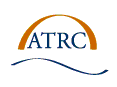

The project team has broad sectorial and geographic representation. The team drew together leaders in the field of academic technology access, forerunners in national educational broadcasting, cutting-edge innovators in information technology, and national consumer groups. The team members represent university-based research programs, Canadian corporations, Canadian Small Medium Enterprises and national public sector partners.
The project team is made up of:
The project participants wish to acknowledge CANARIE Inc. for the support provided to the project, the IMS Global Learning Consortium for the forum to communicate the issues raised by the project and begin to effect change within the field, and the many informal partners who assisted in steering and furthering the project goals.
The transition to broadband networks represents a risk and an opportunity for people with disabilities. On the one hand, broadband networks provide a flexible vehicle whereby innovative display and control alternatives can be offered that afford access to users with a range of skills and needs. The interactive mechanisms that will be available over broadband networks will allow learners to customize the presentation of the learning materials (the pacing, the order, the modality, etc) while retaining a rich, engaging learning experience. Broadband will also allow the transmission of multiple modalities synchronously (video, audio, haptics, text, graphics), thereby accommodating learners who need alternative display modalities or several display modalities at one time. The risk presented by the move from restricted bandwidth networks to broadband networks is that content developers lose an important motivation to include equivalent alternatives to multimedia content. To date, steps taken by content providers to accommodate users with bandwidth restrictions, legacy browsers or mobile client software (eg, text alternatives, no-frame options, structural markup, etc.) have also made the content accessible to people with disabilities. To ensure that the move to broadband networks does not exclude a large portion of Canadian learners, inclusive tools and mechanisms need to be developed at the outset.
The overall goal of the Barrierfree project was to: identify potential barriers to access in broadband education delivery systems for learners with disabilities, develop solutions to the barriers, advance alternative or multi-modal display and control mechanisms that are only possible in broadband environments and create tools that allow learners to customize the learning experience to their individual learning styles and needs.

The project addressed these goals by meeting the following objectives, to:
These developments represent innovative advances in broadband delivered education that will benefit all learners and broaden the scope of subjects that can be effectively taught at a distance. They utilize the unique possibilities of broadband to bridge barriers and provide new opportunities to learners with disabilities while making the learning experience more interactive and engaging for all learners.
Learners who are presently excluded from using network based educational environments due to access barriers include individuals of all ages:
Potential learners with disabilities make up more than 15% of the Canadian population. This will increase in the next decade with the effects of an aging population. Given a growing awareness and respect for the human rights of people with disabilities worldwide and legislative steps taken to insure access, there is a large market worldwide for barrier free education tools.
Development of broadband delivered education systems in Canada is at a critical juncture: conventions can be established that exclude a large sector of the Canadian population or conventions can be adopted that make education possible for many Canadians who have been previously excluded. If proactive steps are taken now, barrier-free education can be a naturally integrated component of broadband education delivery. This project has begun this proactive process and has established Canada as a leader in inclusive on-line education in many international forums.


